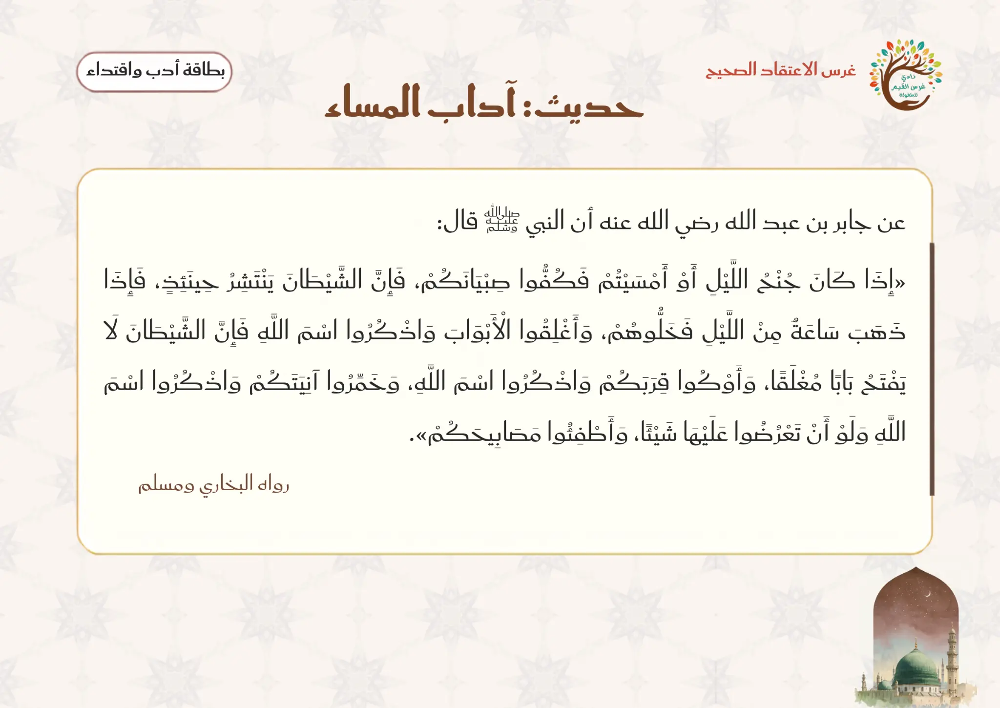
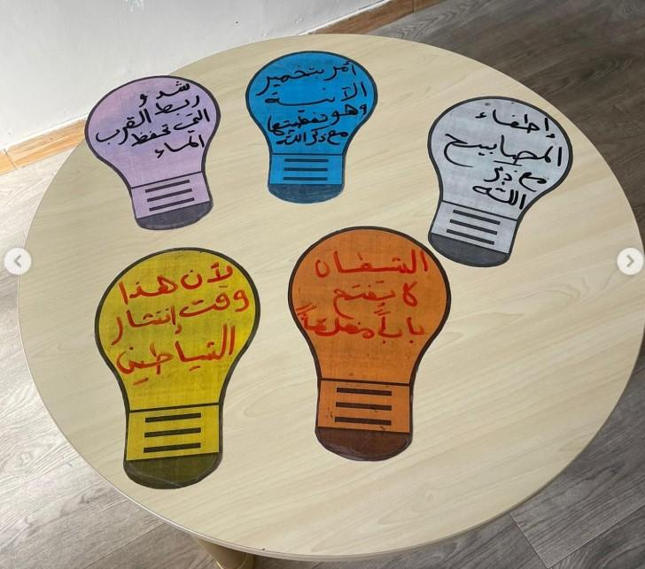
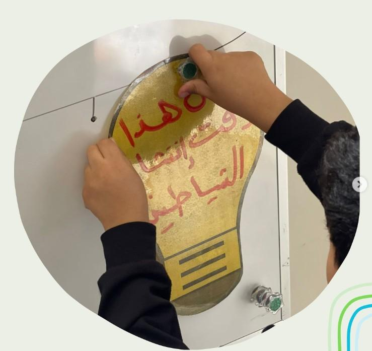
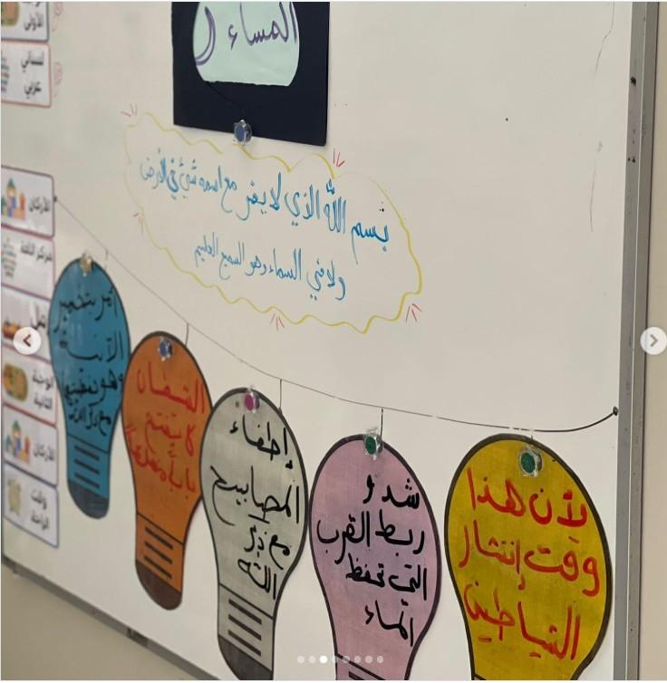
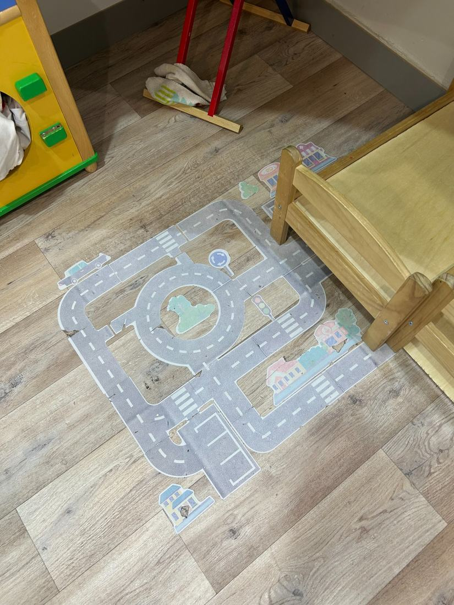

المرحلة: تمهيدي (5–6 سنوات) · المجلس: مجلس الأدب والاقتداء · اليوم: الخامس (أعمال يحبها الله في الليل)
المدة: نصف ساعة
سؤال التركيز
ما الآدابُ التي علّمنا النبيُّ ﷺ في المساء، ولماذا نطبّقها؟
بوصلةُ اللقاء: تفتح به المعلمةُ الحوار وتعود إليه عند الغلق. يقيسه سؤالُ التغذية الراجعة الأول ومؤشراتُ النجاح.
الفكرة المفتاح
علّمنا النبي ﷺ آدابًا نافعة في المساء: نكفّ الصبيان أول الليل، ونغلق الأبواب ونذكر اسم الله، ونوكئ القِرَب، ونخمّر الآنية، ونطفئ المصابيح؛ نطبّقها حفظًا للنعم واتباعًا للسنّة، وذكرُ الله حصنٌ حصينٌ يحفظنا بإذن الله.
تظهر موسّعةً في «المعنى المركزي» بسير اللقاء؛ لو لم يبقَ من الدرس إلا جملةٌ فهي هذه.
مسار بداية اللقاء
① تهيئة
إشارة بدء اللقاء — أدب واقتداء
السلام عليكم ورحمة الله وبركاته يا أحباب النبي ﷺ، هيا نستمع وننظر لنعرف ماذا سيكون لقاؤنا.
منهجية الإشارة: تبدأ المعلمة بتحية الإسلام والترحيب، وتذكّر الأطفال أن الله أرسل نبيّنا محمدًا ﷺ ليعلّمنا آداب ديننا في الطعام والنوم والسلام وغيرها، ثم تدعوهم للمشاهدة دون أن تُسمّي اللقاء؛ فيشاهدون إشارة بدء لقاء أدب واقتداء (الفيديو المعتمد) ويتعرّفون على لقائهم بأنفسهم، ثم تؤكّد المعلمة: «نعم، لقاؤنا الآن هو أدب واقتداء، نتعلّم فيه آداب الإسلام ونقتدي برسول الله ﷺ»، فيتهيّؤون للجلوس والإنصات.
▶ فيديو إشارة بدء لقاء أدب واقتداء (الإشارة المعتمدة)
سؤال الإشارة: ما هو لقاؤنا الآن؟ جواب الأطفال: «لقاؤنا أدب واقتداء، نتعلم فيه آداب الإسلام ونقتدي برسول الله ﷺ».
قوانين الفصل
أحافظ على نظافة فصليإماطة الأذى عن الطريق صدقة.
أستمع وأنصتفلا أقاطع الآخرين.
أحفظ لساني ويديالمسلم من سلم المسلمون من لسانه ويده.
أجلس جلسة صحيحةفي المساحة المخصصة لي.
أرفع يدي للمشاركةالسؤال للجميع والإجابة لمن تختاره المعلمة.
مراجعة سريعة
تراجع المعلمة مع الأطفال: ما الأدب الذي تعلمناه سابقًا؟ وكيف نطبّقه في الصف والبيت؟ ولماذا نقتدي بالنبي ﷺ؟ وماذا نفعل عندما يأتي المساء في البيت؟ ومن الذي علّمنا الآداب الإسلامية؟
ورقة التدريس السريعة — خطوات اللقاء أثناء الدرس
① تهيئة وبداية اللقاء ٧ د
إشارة بدء اللقاء: مشاهدة إشارة أدب واقتداء (الفيديو المعتمد)، ثم جواب الإشارة.
قوانين الفصل الخمسة.
مراجعة سريعة: الأدب السابق · ماذا نفعل إذا جاء المساء · مَن علّمنا الآداب.
② بناء وسير اللقاء ١٥ د
حديث آداب المساء: «إذا كان جُنح الليل... فكفّوا صبيانكم... وأغلقوا الأبواب واذكروا اسم الله...».
استراتيجية المصابيح: ستّة آداب، لكل أدب مصباح يضيء طريق المساء الآمن.
المعنى المركزي، ثم تصحيح فهم الطفل.
ذكر الصباح والمساء: «بسم الله الذي لا يضرّ مع اسمه شيء...».
③ إغلاق وتقويم ٨ د
النشاط المصاحب: الورقة المخفية · المصابيح · بيت المساء الآمن · ترديد الذكر.
أسئلة التقويم: أدب من آداب المساء · إغلاق الباب مع ذكر الله · الذكر.
دعاء كفارة المجلس وختام اللقاء.
ربط الأسرة: يطبّق الطفل مع أسرته أدبًا واحدًا من آداب المساء (إغلاق الباب أو تغطية الإناء) قائلًا «بسم الله»، ويردّد ذكر المساء ثلاثًا.
ورقةٌ مرجعية سريعة أثناء الدرس — الخطوات فقط دون الأهداف والزيادات؛ والنصّ الكامل في تبويب «دليل الدرس كامل».
سير اللقاء
② سير وإغلاق
المرحلة الأولى — البناء: تذكّر المعلمة الأطفال بأن الله أرسل إلينا نبيّنا محمدًا ﷺ ليعلّمنا الآداب التي يحبها الله، ومن رحمته أنه علّمنا ما يحفظنا حين يأتي المساء. ثم تسأل: ماذا نفعل إذا جاء المساء في البيت؟ وتستقبل الإجابات دون أن تعجل بالتصحيح.
نصّ الحديث ودليله: تعرض المعلمة بطاقة الحديث وتقرؤه بصوت واضح: عن جابر بن عبد الله رضي الله عنه أن النبي ﷺ قال: «إذا كان جُنحُ الليل أو أمسيتم فكُفّوا صبيانكم... وأغلقوا الأبواب واذكروا اسم الله... وخمّروا آنيتكم واذكروا اسم الله... وأطفئوا مصابيحكم». رواه البخاري ومسلم.

بطاقة حديث آداب المساء التي تعرضها المعلمة
المعنى العام: علّم رسول الله ﷺ أمته أسباب الحفظ والسلامة حين يأتي المساء؛ فجاءت هذه النصائح مثل قوانين السلامة لنا. والمعلمة لا تُطيل في التخويف من الشياطين، بل تجعل المعنى الأساس: النبي ﷺ رحيم بنا، وذكر الله حصنٌ يحفظ المسلم.
استراتيجية المصابيح — الآداب الستّة: «كلُّ أدبٍ نتعلمه اليوم نضيء له مصباحًا حتى نعرف طريق المساء الآمن»:
المصباح الأول — وقت المساء: «إذا كان جُنح الليل أو أمسيتم» أي إذا دخلتم في المساء. المصباح الثاني — كفّ الصبيان: «فكفّوا صبيانكم» أي امنعوهم من الخروج أول الليل، وهذا وقتٌ ينتشر فيه الشيطان، فإذا مضى وقتٌ من الليل خُلّي عنهم. المصباح الثالث — إغلاق الأبواب مع ذكر الله: نغلق الأبواب ونذكر اسم الله؛ فالشيطان لا يفتح بابًا مغلقًا. المصباح الرابع — إيكاء القِرَب: نشدّ ونربط أوعية الماء واللبن من رؤوسها مع ذكر اسم الله. المصباح الخامس — تخمير الآنية: نغطّي الأواني مع ذكر اسم الله ولو بعرض عودٍ عليها. المصباح السادس — إطفاء المصابيح: نطفئ المصابيح مع ذكر اسم الله؛ صيانةً وسلامةً مما قد يضرّ.
المعنى المركزي: علّمنا النبي ﷺ آدابًا نافعة في المساء: نكفّ الصبيان أول الليل، ونغلق الأبواب ونذكر اسم الله، ونوكئ القِرَب، ونخمّر الآنية، ونطفئ المصابيح؛ نطبّقها حفظًا للنعم واتباعًا للسنّة، وذكرُ الله حصنٌ حصينٌ يحفظنا بإذن الله.
تصحيح فهم الطفل: ليست آداب المساء تخويفًا يُفزع الطفل؛ فالنبي ﷺ رحيمٌ بنا علّمنا أسباب السلامة والحفظ. ونحفظ للحديث الشريف هيبته: نتلوه في موضعه المعظَّم ولا نجعله لعبةً، ويكون التطبيق على معناه بالأفعال الظاهرة. وذكرُ اسم الله ليس تعويذةً لغوًا، بل طاعةٌ لله وثقةٌ بحفظه.
ذكر الصباح والمساء: تقول المعلمة: «من قال كلّ صباحٍ ومساءٍ ثلاث مرات هذا الذكر لم يضرّه شيء بإذن الله»، ثم تقرأ الذكر كاملًا، وتقسّمه مقاطع قصيرة يردّدها الأطفال خلفها: «بسم الله الذي لا يضرّ مع اسمه شيءٌ في الأرض ولا في السماء، وهو السميع العليم» — يُقال صباحًا ومساءً ثلاث مرات.
المرحلة الثانية — التثبيت والتطبيق: تعرض المعلمة لوحة بيتٍ أو مجسّمًا، فيغلق طفلٌ الباب ويقول «بسم الله»، ويغطّي آخر الإناء ويقول «بسم الله»، ويطفئ ثالثٌ المصباح تمثيلًا آمنًا. وتؤكّد: هكذا نقتدي برسول الله ﷺ ونطبّق آداب المساء.
جملة اللقاء الختامية: إذا جاء المساء أطبّق آداب نبيّي ﷺ وأذكر اسم الله؛ فذكرُ الله حصنٌ يحفظني. ويكرّر الأطفال: «بسم الله الذي لا يضرّ مع اسمه شيء».
وقفة اقتداء: أطبّق آداب المساء كما علّمنا النبي ﷺ (تربطها المعلمة بالرحمة والحفظ لا بالتخويف)
علّمنا النبي ﷺ آداب المساء رحمةً بنا وحفظًا لنا: نكفّ الصبيان أول الليل، ونغلق الأبواب ونذكر اسم الله، ونخمّر الآنية ونوكئ القِرَب ونطفئ المصابيح؛ فنقتدي به محبةً واتباعًا، ونجعل ذكر الله حصنًا لنا في مسائنا.
تنبيه منهجي: يطبّق الطفل معنى الحديث ويحفظ هيبته؛ فيبقى لفظ الحديث في موضعه المعظَّم، ويكون التطبيق على معناه بالأفعال الظاهرة. ولا تُطيل المعلمة في التخويف من الشياطين، ولا يُقرأ نص الحديث بصوت آلي، ولا تُستخدم صور أو تمثيلات للنبي ﷺ أو للصحابة.
الوسائل والصور المعروضة في اللقاء
بطاقة حديث آداب المساءإذا كان جُنح الليل فكفّوا صبيانكم...

المصابيح قبل العرضستّة مصابيح تحمل آداب المساء

تثبيت المصباح على اللوحةيشارك الطفل فيزداد اندماجه

المصابيح بعد التعليقطريق المساء الآمن مع الذكر
النشاط المصاحب
أنشطة آداب المساء التطبيقية
الهدفأن يتعرّف الطفل على آداب المساء ويطبّق أدبًا أو أدبين منها بالأفعال الظاهرة، ويردّد ذكر المساء اقتداءً بالنبي ﷺ.
الأدواتورقة سوداء مقوّاة وكلمة «آداب المساء» · ستّ بطاقات على شكل مصابيح · مجسّم بيت أو لوحة بيت (باب وإناء ومصباح رمزي) · بطاقة الذكر بخطٍّ كبير.
١ · نشاط الورقة السوداء المخفية
تجهّز المعلمة ورقة سوداء مقوّاة وتُثبّت بداخلها كلمة «الليل» أو «آداب المساء».
تعرض الورقة وتسأل: ما الأدب الجديد الذي سنتعلمه؟
تسمع توقّعات مختصرة، ثم تكشف الكلمة.
تربط الكلمة بالوحدة: نحن في وحدة الليل والنهار، واليوم نتعلم آداب المساء.
٢ · نشاط المصابيح
تضع المعلمة ستّ بطاقات على شكل مصابيح.
كلما شرحت أدبًا من الحديث فتحت مصباحه أو قلبت بطاقته.
يردّد الأطفال عنوان المصباح: نكفّ الصبيان · نغلق الأبواب · نذكر اسم الله...
بعد اكتمال المصابيح تسأل: ما الذي علّمنا إياه النبي ﷺ في المساء؟
٣ · نشاط بيت المساء الآمن
تعرض المعلمة مجسّم بيتٍ أو لوحة بيت.
يغلق طفلٌ الباب ويقول: «بسم الله».
يغطّي طفلٌ آخر الإناء ويقول: «بسم الله».
يطفئ طفلٌ ثالث المصباح تمثيلًا آمنًا، وتختم: هكذا نقتدي برسول الله ﷺ.
٤ · نشاط ترديد الذكر
تعرض المعلمة بطاقة الذكر بخطٍّ كبير وتقرؤه كاملًا مرة واحدة.
تقسّمه إلى مقاطع ويردّد الأطفال وراءها.
تختار طفلين أو ثلاثة لترديد مقطعٍ قصير.
تختم: هذا ذكرٌ نقوله صباحًا ومساءً ثلاث مرات.
أسئلة أثناء النشاط (التغذية الراجعة)
ما الأدب الذي علّمنا إياه النبي ﷺ في المساء؟
مَن صاحب النعم كلها؟
متى نقول هذا الذكر، وكيف نشكر الله بعده؟
اختيارات المعلمة حسب حاجة الطفل
الخجول: يعلّق مصباحًا واحدًا ويردّد عنوانه دون إلزامٍ بالكلام الكثير.
السريع: يرتّب المصابيح الستّة ويربط كل أدبٍ بفائدته العملية.
كثير الحركة: يتولّى تثبيت المصابيح على اللوحة وإعادة الأدوات، دون احتساب سرعة أو فوز.
الجملة الختاميةاللهم أعنّا على حفظ آداب المساء وذكرك في مسائنا، واجعلنا من المقتدين برسولك ﷺ.
اختيارات الأنشطة الإضافية
تلبية الاحتياجات الفرديةالبطيء: إعادة عرض الأدب وتكرار عنوان المصباح بلطف. الخجول: «جزاك الله خيرًا» عند أول ترديدٍ للذكر. النشيط: يوزّع بطاقات المصابيح ويجمعها بعد النشاط.
الربط بالمواد الأخرىأحبك ربي: محبة النبي ﷺ والاقتداء بهديه. علّمني ربي: ذكر الله حصنٌ يحفظنا. لساني: نطق ذكر المساء ومفردات الحديث واضحًا.
التوسيع والإثراءبيتي: يطبّق أدبًا من آداب المساء (إغلاق باب أو تغطية إناء) مع أسرته قائلًا «بسم الله». فني: تلوين بطاقة مصباحٍ لأحد آداب المساء (بلا صور ذوات أرواح).
اقتراحات للتكرار مراجعة أدبٍ من آداب المساء وترديد الذكر ٣ دقائق في مطلع اللقاء التالي قبل الدرس الجديد.
كفارة المجلس · خاتمة اللقاء
سبحانك اللهم وبحمدك، أشهد أن لا إله إلا أنت، أستغفرك وأتوب إليك.
العلاقة التكاملية لهذا اللقاء
الفكرة الناظمة لليوم: الليل سكنٌ وعبادةٌ وآدابٌ نبوية تحفظ الطفل؛ جعل الله الليل راحةً، وعلّمنا نبيّنا ﷺ ما نستقبل به المساء من أدبٍ وذكر.
سؤال اليوم: ما الأعمال التي يحبها الله في الليل؟ وكيف أستعدّ للمساء بأدبٍ وذكر؟
هذا اللقاء: أدب واقتداء — آداب المساء.
كيف يتكامل هذا اللقاء مع بقية دروس اليوم والوحدة؟
التعليمُ التكامليّ = يعيشُ الطفلُ المعنى الواحد في كلّ حصص يومه؛ فلا يكون هذا اللقاء جزيرةً منعزلة، بل خيطًا يربط القرآنَ واللغةَ والأدبَ في تجربةٍ واحدة. وهذه جسورُ الربط العمليّة:
كتابي المنير — سورة الفجر
تخاطب السورةُ النفسَ المطمئنّة، والليلُ الذي أقسم اللهُ به موطنُ السكينة؛ فآدابُ المساء التي يتعلّمها الطفلُ تصنعُ هذه النفسَ الآمنةَ المطمئنّة في ليلها. حركةُ المعلمة: «الليلُ الذي أقسم اللهُ به… نستقبله بأدبٍ فتطمئنّ نفوسُنا».
علّمني ربي — أعمال الليل
جعل اللهُ الليلَ سكنًا وراحة، وفيه أعمالٌ صالحة؛ فآدابُ المساء (غلقُ الأبواب وذكرُ الله) تطبيقٌ محسوسٌ لمعنى «الليل سكن» الذي تأمّله الطفلُ. حركةُ المعلمة: «تعلّمنا أن الليل سكن… فكيف نجعل ليلنا آمنًا هادئًا؟».
أحبك ربي — الحيُّ القيّوم
مَن يحرسنا في ليلنا ونحن نيام؟ اللهُ الحيُّ القيّومُ الذي لا ينام؛ فأدبُ المساء يقودُ الطفلَ إلى الاطمئنان بحفظ الله وتعظيمه. حركةُ المعلمة: «نغلقُ البابَ ونذكرُ اسمَ الله… فمَن يحفظنا بعد ذلك؟ ربُّنا الذي لا ينام».
لساني عربي
كلماتُ المساء «لَيْل · نَوْم · بَيْت · أمان» يقرؤها الطفلُ بالحركات، فتصبح اللغةُ أداةً للتعبير عن سكينة الليل وآدابه. حركةُ المعلمة: «هذه كلمةُ (أمان)… مَن يقرؤها؟ في الليل نشعرُ بالأمان بحفظ الله».
اسألي: كيف يخدم هذا اللقاء معنى اليوم؟ يتعلم الطفل أن يستقبل المساء بأدبٍ وذكر: يغلق الأبواب ويخمّر الآنية ويذكر اسم الله، فيرتبط الليل عنده بالسكينة والحفظ لا بالخوف. وعند الانتقال إلى ركن المسكن، يطبّق أدبًا محسوسًا من آداب المساء ويقول «بسم الله». مشاركة ولي الأمر: يطبّق الوالدان أدبًا مسائيًا بسيطًا في البيت، ويثنيان على هدوء الطفل وترديده للذكر دون تحويل الموقف إلى اختبار أو تصوير.
التقويم في منهج غرس القيم ثلاثي المراحل — يرصد الطفل قبل الدرس وأثناءه وبعده.
التقويم القبلي
ما الآداب التي تعلمناها سابقًا؟
ماذا نفعل عندما يأتي المساء في البيت؟
من الذي علّمنا الآداب الإسلامية؟
التقويم التكويني
هل يتفاعل الطفل مع الورقة المخفية؟
هل يسمّي أدبًا واحدًا من آداب المساء؟
هل يعلّق مصباحًا ويردّد عنوانه؟
هل يردّد جزءًا من الذكر خلف المعلمة؟
التقويم النهائي
اذكر أدبًا من آداب المساء علّمنا إياه النبي ﷺ.
مع أيّ فعلٍ نغلق الباب؟ (نذكر اسم الله)
ما الذكر الذي نقوله صباحًا ومساءً؟
المعيار: ذكر أدبين من آداب المساء + ربط الفعل بذكر اسم الله + ترديد الذكر بمساعدة
مؤشرات النجاح
المؤشر المعرفي
يذكر أدبين من آداب المساء، ويعرف أن النبي ﷺ علّمنا أسباب الحفظ والسلامة.
المؤشر المهاري
يطبّق فعلًا محسوسًا (إغلاق باب أو تخمير إناء) ويقرنه بذكر اسم الله.
المؤشر الوجداني
يحبّ الاقتداء برسول الله ﷺ، ويربط ذكر اسم الله بالأمان والحفظ دون خوفٍ مبالغ.
المؤشر التطبيقي
يردّد ذكر المساء أو جزءًا منه بمساعدة المعلمة، ويميّز فعلًا مناسبًا للمساء عن غيره.
الآداب الصفية لحظات تربوية ذهبية — تبدأ المعلمة كل فكرة بآية أو نص حديث، ولا يعلو صوتها على النص الشرعي. الحزم مع الهدوء دائمًا.
آداب المعلمة — مقدمة الرعاية
تبدأ بالبسملة والحمدلة والدعاء: «اللهم علّمنا ما ينفعنا وانفعنا بما علّمتنا».
تنطلق كل فكرة بآية أو نص حديث شريف.
الحزم مع الهدوء — فلا يعلو صوت المعلمة على النص الشرعي.
آداب الطفل في مجلس أدب واقتداء
الجلوس بسكينة وحسن الاستماع، ورفع اليد قبل الحديث.
انتظار الدور في التطبيق، والاقتداء برسول الله ﷺ في الأدب.
المحافظة على الصور والبطاقات والأدوات، ومعاملة الزملاء برفق.
١ · تعظيم النص الشرعي
الموقفحاول طفلٌ أن يمسك بطاقة الحديث ويعبث بها أو يقرؤها لهوًا.
الرد المقترح«كلامُ نبيّنا ﷺ نعظّمه ونستمع إليه بأدب؛ نضع البطاقة في مكانها ونصغي، ونطبّق ما فيها بأفعالنا. جزاك الله خيرًا».
القيمةتعظيم السنّة — أدب المجلس.
ربط بالدرس: يبقى لفظ الحديث في موضعه المعظَّم، والتطبيق على معناه.
٢ · ذكر اسم الله عند الأفعال
الموقفأغلق طفلٌ الباب الرمزي أو غطّى الإناء في النشاط دون أن يذكر اسم الله.
الرد المقترح«علّمنا النبي ﷺ أن نذكر اسم الله عند إغلاق الباب وتخمير الإناء؛ فلنقل: بسم الله. جزاك الله خيرًا».
القيمةذكر الله — اتباع السنّة.
ربط بالدرس: «وأغلقوا الأبواب واذكروا اسم الله... وخمّروا آنيتكم واذكروا اسم الله».
٣ · السكينة والطمأنينة لا الخوف
الموقفخاف طفلٌ من ذكر انتشار الشيطان في المساء أو بالغ في التخويف.
الرد المقترح«لا تخف يا بطل؛ النبي ﷺ رحيمٌ بنا علّمنا أسباب الحفظ، وذكرُ الله حصنٌ يحفظنا؛ فنطمئنّ ونذكر ربّنا. جزاك الله خيرًا».
القيمةالطمأنينة بذكر الله — الرحمة.
ربط بالدرس: تنبيه المعلمة بعدم الإطالة في التخويف من الشياطين.
٤ · حسن الاستماع وعدم المقاطعة
الموقفتحدّث طفلٌ مع زميله أثناء عرض المصابيح وشرح آداب المساء.
الرد المقترح«نستمع وننصت لنتعلّم آداب المساء التي علّمنا إياها نبيّنا ﷺ، ونرفع أيدينا قبل الحديث. جزاك الله خيرًا».
القيمةحسن الاستماع — أدب المجلس.
ربط بالدرس: من قوانين الفصل «أستمع وأنصت» و«أرفع يدي».
٥ · الانتظار وضبط النفس في النشاط
الموقفأراد طفلٌ أن يعلّق كل المصابيح أو يطبّق كل أفعال البيت قبل أن يأتي دوره.
الرد المقترح«انتظر دورك يا بطل، لكلٍّ منّا مصباحٌ يعلّقه وفعلٌ يطبّقه. حسن الانتظار من أدب المجلس. جزاك الله خيرًا».
القيمةضبط النفس — حسن الانتظار — احترام المجموعة.
ربط بالدرس: نشاطا المصابيح وبيت المساء الآمن يتناوب فيهما الأطفال بهدوء لا سباقًا.
القيمة تترسّخ حين تُعاش في البيت كما تُتعلَّم في الفصل — هذه التهيئات يُطبّقها ولي الأمر قبل الدرس وبعده.
١ · تهيئة وجدانية
أيُحدّث ولي الأمر طفله عن حبّ النبي ﷺ والاقتداء بآدابه، ويذكّره أن الله أرسله ليبيّن لنا ما يحفظنا ويحبّه من الآداب.
بيقول له عند المساء: «نستقبل المساء بأدبٍ وذكر؛ نغلق الأبواب ونذكر اسم الله اقتداءً بنبيّنا ﷺ».
← يربط الطفل بين الدرس ومحبته للنبي ﷺ في حياته الفعلية.
٢ · تهيئة معرفية
أيذكّره أن آداب المساء هي أعمالٌ علّمنا إياها النبي ﷺ إذا دخل المساء، وأن ذكر الله حصنٌ يحفظنا.
بيلفت انتباهه إلى أن هذا من هدي النبي ﷺ، دون تحويل الموقف إلى اختبار أو تخويف أو تصوير.
← يعيش الطفل المعنى واقعيًا قبل عرضه في الصف.
٤ · تهيئة عملية بسيطة
أيجهّز مع الطفل بطاقة ذكرٍ صغيرة تُذكّره بذكر المساء: «بسم الله الذي لا يضرّ مع اسمه شيء...».
بيساعده على ترديد كلمات «آداب المساء · جُنح الليل · نغلق · نخمّر · نذكر اسم الله» بوضوح.
← مشاركة الأسرة تعطي الطفل حافزًا للمشاركة أمام زملائه.
٥ · تهيئة سلوكية
أيشجّع طفله على تطبيق أدبٍ من آداب المساء كل يوم: يغلق باب الغرفة أو يغطّي كوبًا قائلًا «بسم الله».
بيذكّره بترديد ذكر المساء ثلاث مرات، ويثني عليه بلطف.
← يصبح السلوك اليومي نفسه جزءًا من الدرس.
٦ · تهيئة تعاونية أسرية
يطبّق أفراد الأسرة آداب المساء معًا: يغلقون الأبواب ويخمّرون الآنية ويذكرون اسم الله، ويثنون على الطفل حين يطبّق ويذكر: «أحسنت، ذكرت اسم الله واقتديت بنبيّك ﷺ». فيتعلّم أن العائلة تعينه على حسن الأدب واتباع السنّة.
← يزرع التعاون الأسري ومحبة الاقتداء بالنبي ﷺ في وجدان الطفل.
أسئلة تطرحها على طفلك
ما آداب المساء التي علّمنا إياها النبي ﷺ؟
مع أيّ فعلٍ نغلق الباب ونغطّي الإناء؟ (نذكر اسم الله)
ما الذكر الذي نقوله صباحًا ومساءً؟
لماذا علّمنا النبي ﷺ هذه الآداب؟ (رحمةً بنا وحفظًا لنا)
مَن صاحب النعم كلها الذي يحفظنا؟ (الله سبحانه)
نص رسالة جاهزة لولي الأمر (واتساب)
بسم الله الرحمن الرحيم السلام عليكم ورحمة الله وبركاته
تعلّم طفلكم الكريم اليوم في مادة «أدب واقتداء» درس «آداب المساء»: عرف أن النبي ﷺ علّمنا إذا جاء المساء أن نكفّ الصبيان، ونغلق الأبواب ونذكر اسم الله، ونخمّر الآنية ونطفئ المصابيح؛ حفظًا لنا واتباعًا لهديه ﷺ، وردّد ذكر المساء: «بسم الله الذي لا يضرّ مع اسمه شيءٌ في الأرض ولا في السماء وهو السميع العليم».
نشاط بيتي: طبّقوا مع طفلكم أدبًا مسائيًا بسيطًا (إغلاق باب أو تغطية إناء) قائلين «بسم الله»، وردّدوا معه ذكر المساء ثلاثًا، وأثنوا على هدوئه دون تخويف.
جزاكم الله خيرًا على شراككم في تربية أبنائكم — فريق نادي غرس القيم
القيم الأساسية للدرس
الاقتداء برسول الله ﷺ واتباع السنّة
محبة النبي ﷺ واتباع هديه في آداب المساء؛ فنطبّق ما علّمنا حبًّا واتباعًا.
ذكر الله
نذكر اسم الله عند إغلاق الأبواب وتخمير الآنية؛ فذكرُ الله حصنٌ حصينٌ يحفظنا.
حفظ النعمة والسلامة
نحفظ الطعام والشراب بالتخمير والإيكاء، ونتّقي ما يضرّ؛ فحفظ النعمة من الأدب.
النظام والسكينة
يستقبل الطفل المساء بهدوءٍ ونظام وطمأنينة، لا بخوفٍ ولا فوضى.
كيف تغرس المعلمة القيم أثناء الدرس؟
تربط آداب المساء بحبّ الاقتداء بالنبي ﷺ ورحمته بنا لا بالتخويف.
تنمذج ذكر اسم الله عند الأفعال أمام الأطفال بهدوء ووضوح.
تُثني على من يطبّق أدبًا ويذكر اسم الله: «أحسنت، اقتديت بنبيّك ﷺ».
تُبيّن الحكمة: «ذكرُ الله حصنٌ يحفظنا؛ فنطمئنّ ونذكر ربّنا في مسائنا».
المفاهيم الأساسية
آداب المساء
الأعمال التي علّمنا إياها النبي ﷺ إذا دخل المساء، حفظًا لنا واتباعًا لهديه.
جُنح الليل
أوّل دخول الليل أو وقت المساء الذي نبدأ عنده تطبيق آداب المساء.
تخمير الآنية وإيكاء القِرَب
تغطية الأواني وشدّ أوعية الماء واللبن مع ذكر اسم الله؛ حفظًا للنعمة.
الحصن الحصين
ما يحفظ المسلم بإذن الله، ومن أعظمه ذكر الله في الصباح والمساء.
الاستراتيجيات التعليمية
الورقة المخفيةعرض ورقةٍ سوداء تخفي كلمة «آداب المساء» لإثارة التوقّع قبل الكشف.
استراتيجية المصابيحلكل أدبٍ مصباحٌ يضيء على اللوحة؛ فيرى الطفل آداب المساء طريقًا آمنًا يُضاء أدبًا بعد أدب.
أعواد الآيسكريماختيار الطفل المُجيب بالعود الذي يحمل اسمه لتوزيع المشاركة بعدل.
التطبيق العملي القصيربيت المساء الآمن: إغلاق باب وتخمير إناء وإطفاء مصباح تمثيلًا مع ذكر اسم الله.
الترديد والاسترجاعترديد ذكر المساء مقاطعَ قصيرة واسترجاع الجملة الختامية.
الأساليب العشرة
١ · المناقشة الهادفة
أسئلة مباشرة: ماذا نفعل إذا جاء المساء؟ مَن علّمنا هذه الآداب؟
٢ · العصف الذهني
استدعاء ما يعرفه الطفل عن المساء والبيت قبل عرض الحديث.
٣ · الترديد الجماعي
«نغلق الأبواب ونذكر اسم الله»، وترديد ذكر المساء خلف المعلمة.
٤ · العرض البصري
بطاقة الحديث والمصابيح الستّة على لوحة واضحة.
٥ · النمذجة والتمثيل
إغلاق الباب وتخمير الإناء وإطفاء المصباح تمثيلًا آمنًا مع ذكر اسم الله.
غرس محبة الاقتداء بالنبي ﷺ في الطفل (دليل عملي للمربين)
مركز دلائل – الرياض، ط3.
وقت الأركان التطبيقية
الأركان مساحاتٌ غنيّة بأدوات التعلّم، مدّتها ٣٠ دقيقة، يلعب فيها الأطفال ويستكشفون الأدوات بحرّية ومرح — لا التزام بآداب مجالس العلم كالمواد الأساسية. وتستقطع المعلمة وقتًا يسيرًا لتنفيذ نشاط تطبيقي سريع على الفكرة المركزية للدرس تأكيدًا وترسيخًا: إذا جاء المساء أطبّق آداب نبيّي ﷺ فأغلق الأبواب وأخمّر الآنية وأذكر اسم الله؛ حفظًا للنعم واتباعًا للسنّة، وذكرُ الله حصنٌ يحفظني. أمام المعلمة ركنان مقترحان تختار بينهما (أو تنفّذهما معًا) بحسب جاهزية البيئة.
ضابط منهجي: نتعلّم الأدب لأن الله يحبه، ونقتدي فيه برسول الله ﷺ. الصور والوسائل لتقريب الفكرة، أما النص الشرعي فيبقى في موضع التلاوة والتعظيم؛ لا يُقرأ الحديث بصوتٍ آلي، ولا يُحوَّل نصّه إلى لعبة، والتطبيق على الأفعال الظاهرة فقط. لا تُستخدم صور تجسّد النبي ﷺ أو الصحابة، ولا وجوه في البطاقات، ولا مبالغة في التخويف من الشياطين، ولا مصابيح حقيقية تُشعل؛ الإطفاء تمثيلٌ آمن تحت نظر المعلمة.
بابٌ خشبيٌّ صغير أو بيت دمى، كوبٌ بغطاء وإناءٌ صغير، قطعة قماشٍ للتخمير، مصباحٌ رمزيٌّ آمن، وبطاقات: «أغلق» · «أغطي» · «أذكر اسم الله»، وبطاقة حديث آداب المساء.
قوانين الركن
البقاء في مساحة الركن · انتظار الدور · المحافظة على الأدوات · التعامل برفقٍ وخفض الصوت · إعادة كل وسيلة إلى مكانها بعد اللعب.
اللعب الحرّ في الركن
يستكشف الأطفال بيت الدمى والأدوات المنزلية التمثيلية، ويمثّلون حياة البيت والمساء بحرّية ومرح دون تكليف؛ فالركن مساحة لعب لا حلقة علم.
النشاط التطبيقي السريع
تستقطع المعلمة نحو ٥–٧ دقائق لتطبيق سريع على الفكرة المركزية: أطبّق أدبين من آداب المساء — أغلق الباب وأخمّر الإناء — وأذكر اسم الله.
تقرأ المعلمة قوانين ركن المسكن وتعرض بطاقات الأفعال.
يغلق الطفل الباب الصغير برفقٍ ويقول: «بسم الله».
يغطّي الكوب أو الإناء بقطعة القماش ويقول: «بسم الله».
تذكّره المعلمة بجملة: «نذكر اسم الله عند هذه الأعمال»، ثم يعيد الأدوات مرتّبة.
هدف الركن
أن يطبّق الطفل فعلين من آداب المساء (إغلاق الباب وتغطية الإناء) بالأفعال الظاهرة مقرونين بذكر اسم الله.
دور المعلمة
تُتيح اللعب الحرّ أولًا، ثم تستقطع وقتًا يسيرًا للنشاط، تقول ألفاظًا قصيرة صحيحة وتمنع المبالغة أو التخويف، فالهدف أدبٌ عمليٌّ هادئ.
خصوصية عقدية وتربوية
لا يُقرأ الحديث بصوت المتصفح أو الذكاء الاصطناعي، ولا يُحوَّل نصّه إلى لعبة؛ التطبيق على الأفعال الظاهرة فقط، والبطاقات بلا وجوه، ولا تصوير للنبي ﷺ أو للصحابة.
مناسب للفئة العمرية
خطوات قصيرة محسوسة، مع طفلٍ أو طفلين في كل دورة حتى لا يزدحم الركن أو يطول الشرح.
المخرج
يمارس الطفل أدبًا نبويًا ظاهرًا في موقفٍ منزلي، ويقرنه بذكر اسم الله.
نموذج تطبيقي للركن

بيئة منزلية مصغّرةيغلق الباب ويخمّر الإناء ويذكر اسم الله
بطاقة حديث آداب المساءإذا كان جُنح الليل فكفّوا صبيانكم...
الجملة الختامية: أغلق وأغطّي وأذكر اسم الله اقتداءً برسول الله ﷺ.
ترتيب آداب المساء
ركن أدرك واستمتع
الأدوات والوسائل التعليمية
لوحة مطابقة وتصنيف، وبطاقات صورٍ بلا وجوه: دخول المساء · كفّ الصبيان · إغلاق الباب · تغطية الإناء · إطفاء ما يؤذي، ولوحة ترتيب وصندوق بطاقات.
قوانين الركن
البقاء في مساحة الركن · انتظار الدور · المحافظة على الأدوات · إعادة كل وسيلة إلى مكانها بعد اللعب.
اللعب الحرّ في الركن
يستكشف الأطفال لوحة المطابقة وبطاقات الصور، ويرتّبون ويصنّفون بحرّية ومرح دون تكليف.
النشاط التطبيقي السريع
تستقطع المعلمة دقائق يسيرة لتطبيق سريع على الفكرة المركزية: الأدب النبوي يعين الطفل على نظام المساء والسلامة.
تعرض المعلمة ثلاث بطاقاتٍ فقط في البداية.
يرتّب الطفل البطاقات على لوحة الترتيب من العام إلى الخاص دون حفظ نصّ الحديث.
تسأله المعلمة: أيّ فعلٍ يحفظ البيت؟
يختار الطفل بطاقةً واحدة ويطبّقها في ركن المسكن إن كان متاحًا، ثم يعيد البطاقات إلى الصندوق.
هدف الركن
أن يرتّب الطفل بطاقات أفعال آداب المساء ويتذكّر فعلًا أو فعلين وفائدتهما العملية دون حفظ نصّ الحديث.
دور المعلمة
تفصل بين نص الحديث المعظَّم في الدرس وبين بطاقة المعنى في الركن، وتوجّه الترتيب برفقٍ دون إلزامٍ بالحفظ.
خصوصية عقدية وتربوية
لا يُطلب من الطفل تمثيل الخوف من الشياطين، ولا تُذكر تفاصيل لا تناسب عمره؛ يركّز الركن على الطاعة والسلامة، والبطاقات بلا وجوه، ولا تصوير للنبي ﷺ أو للصحابة.
مناسب للفئة العمرية
خطوات قصيرة محسوسة، مع طفلٍ أو طفلين في كل دورة حتى لا يزدحم الركن أو يطول الشرح.
المخرج
يتذكّر الطفل فعلًا أو فعلين من آداب المساء ويعرف فائدتهما العملية، ويرتّب البطاقات ترتيبًا صحيحًا.
نموذج تطبيقي للركن
لوحة المطابقة والتصنيفيرتّب بطاقات أفعال المساء
الجملة الختامية: أتّبع هدي النبي ﷺ في مسائي.
تنبيه تنظيمي: إذا لم تكن وسيلة الركن متاحة، تختار المعلمة الركن الأقرب معنًى ولا تنفّذ النشاط بوسيلةٍ لا تخدم الدرس. المهم أن يخرج الطفل بسلوكٍ عمليٍّ واحد مرتبطٍ بالدرس.
وحدة الليل والنهار · أدب واقتداء · اللقاء الأول — آداب المساء · نادي غرس القيم لضيافة الأطفال